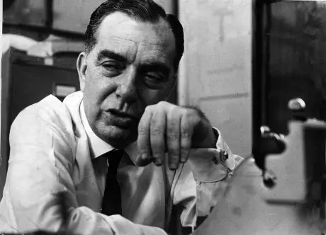

Biografia de Nelson Rodrigues

Nelson Falcão Rodrigues nasceu no Recife, em 1912. Aos 5 anos, mudou-se com a família para o Rio de Janeiro, indo morar na Rua Alegre, em Aldeia Campista, bairro que depois seria absorvido pelos vizinhos Andaraí, Maracanã, Tijuca e Vila Isabel. Em contato com a imaginação fértil do futuro escritor, a realidade da Zona Norte carioca, com suas tensões morais e sociais, serviu como fonte de inspiração para Nelson construir personagens memoráveis e histórias carregadas de lirismo trágico.
Aos 13 anos, ingressa na carreira de jornalista, trabalhando como repórter policial em A Manhã, um dos jornais fundados por seu pai, Mário Rodrigues, que marcaram época – o segundo foi Crítica, palco de uma tragédia que abalaria o dramaturgo profundamente: o assassinato de seu irmão, o ilustrador e pintor Roberto Rodrigues, em 1929.
Lado a lado com o teatro, o jornalismo foi para ele um ambiente privilegiado de expressão. Dentre seus textos propriamente jornalísticos, destacam-se aqueles dedicados ao futebol, em que empregou toda sua veia dramática, transformando partidas em batalhas épicas e jogadores em heróis. Trabalhou nos mais diversos jornais e revistas, assinando artigos e crônicas, como a popular e discutida coluna “A Vida Como Ela É…”.
Em 1943, a consagração no Teatro Municipal do Rio de Janeiro: sua segunda peça, Vestido de Noiva, montada por um grupo amador, Os Comediantes, dirigida pelo polonês recém-imigrado Ziembinski e com cenários de Tomás Santa Rosa, revolucionava a maneira de se fazer teatro no Brasil. Sua peça seguinte, Álbum de Família, de 1946, que trata de incesto, foi censurada, sendo liberada apenas duas décadas depois. Dali em diante, sua obra despertaria as mais variadas reações, nunca a indiferença.
O prestígio alcançado pelo reconhecimento de seu talento não livrou-o de contestações ou perseguições. Classificado pelo próprio Nelson Rodrigues como “desagradável”, seu teatro chocou plateias, provocando não apenas admiração, mas também repugnância e ódio, sentimentos muitas vezes alimentados por seu temperamento inclinado à polêmica e à autopromoção.
Nelson Rodrigues morreu no Rio de Janeiro, em 1980, aos 68 anos. Além dos romances, contos e crônicas, deixou como legado 17 peças que, vistas em conjunto, colocam-no entre os grandes nomes do teatro brasileiro e universal.
Integrantes
2°A
🥼 Ana Clara Amorim Santos
🕶 Raiane Dos Santos De Oliveira
2°C
👢 Rafaella Faustino Brito
2°D
🕶 Ana Paula Rocha De Andrade
🕶 Geovanna Diniz Oliveira
💡 Raissa Abrantes Lôbo
🕶 Raissa Dos Santos De Oliveira
3°C
📸 Ana Luizer Teixeira de Sousa
🎒 Anne Ellen Candido Rodrigues
🎒 Igor Rodrigues de Castro
🎤 Izabelli Dias Rocque
Isabella Santana Silva
3°D
🕶 Luan Cabral Froz
🥼 Stives Oliveira de Aragão Filho
🎩 Luiz Miguel Gomes de Oliveira
🔊 Victória Pereira Borges
Código do grupo
.( A14-10)
Professo(a) conselheiro
.Karine(Artes)